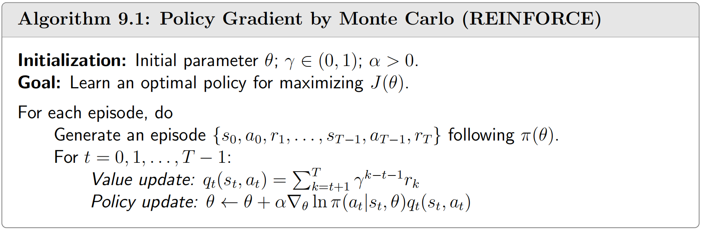

📜 引言
该章节记录了 Policy Gradient 的基本概念。
我们前面讨论更多关于值函数 Vπ(s) ，而在下面的章节中，我们将重心放在策略 π。通过直接优化 π 来实现提升，我们通常使用 θ 来建模策略 π。
🧩 Policy Gradient
Policy Gradient 的优化目标 J(θ) 可以为
- Vˉπ=∑s∈SVπ(s)dπ(s)
- rˉπ=∑s∈Srπ(s)dπ(s)
这里我们可以有
J(θ) 的梯度可以表示为∇θJ(θ)=s∈S∑η(s)a∈A∑∇θπ(a∣s;θ)Qπ(s,a)=ES∼η, A∼π(S)[∇θlogπ(A∣S)⋅Qπ(S,A)] 其中 η(s) 是某种 state distribution，需要注意的是，不同表达形式的 J(θ) 有不同形式的 η(s)
Useful properties
下面将列举一些相关的数学性质，具体的证明请见 参考文献 1 - 9.3.1
Lemma 9.1
Equivalence between Vˉπ and rˉπ rˉπ=(1−γ)⋅Vˉπ
Lemma 9.2
In the discounted case, it holds for any s∈S that∇θVπ(s)=s′∈S∑πPr(s′∣s)a∈A∑∇θπ(a∣s′,θ)Qπ(s′,a) where
πPr(s′∣s)≐k=0∑∞γk[Pπk]ss′=[(In−γPπ)−1]ss′
Theorem 9.3
In the discounted case where γ∈(0,1), the gradients of rˉπ and Vˉπ are∇θrˉπ=(1−γ)∇θVˉπ≈s∈S∑dπ(s)a∈A∑∇θπ(a∣s,θ)Qπ(s,a)=E[∇θlogπ(A∣S,θ)Qπ(S,A)], where S∼dπ and A∼π(S,θ) . Here, the approximation is more accurate when γ is closer to 1.
注意到此时 η(s)=dπ(s)
🧩 REINFORCE
REINFORCE 算法是最简单的算法，即

这是一个 on-policy 算法，所以在训练过程中，需要大量采集轨迹，十分的低效。
与此同时，REINFORCE 算法能够很好地维持 exploit 和 explore 之间的平衡，我们对公式进行改造有
θt+1=θt+α(π(at∣st,θt)Qt(st,at))⋅∇θπ(at∣st,θt) - 当 Qt(st,at) 比较大时，此时更新之后的策略有 π(at∣st,θt+1)>π(at∣st,θt) ，充分利用了值函数的最优策略
- 当 π(at∣st,θt) 比较小时，此时更新之后的策略也有 π(at∣st,θt+1)>π(at∣st,θt) ，体现了对低概率策略的照顾
📋 参考文献
- 强化学习的数学原理 - 赵世钰
https://github.com/MathFoundationRL/Book-Mathematical-Foundation-of-Reinforcement-Learning
{kind=link}